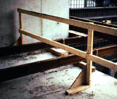

Guardrail Systems
|  |
| This guardrail appears to be properly constructed except
for the missing toeboard that is required to prevent object from falling
to the floor below and possibly striking another worker. |
Where
workers on a construction site are exposed to vertical drops of 6 feet
or more, OSHA requires that employers provide fall protection in one of
three ways before work begins:
- Placing
guardrails around the hazard area.
- Deploying
safety nets.
- Providing
personal fall arrest systems for each employee.
Many times
the nature and location of the work will dictate the form that fall protection
takes. If the employer chooses to use a guardrail system, he must
comply with the following provisions:
- Top
edge height of top rails, or equivalent guardrail system members,
must be between 39 and 45 inches above the walking/working level, except
when conditions warrant otherwise and all other criteria are met
(e.g.,
when employees are using stilts, the top edge height of the top rail
must be increased by an amount equal the height of the stilts).
- Midrails,
screens, mesh, intermediate vertical members, or equivalent intermediate
structures, must be installed between the top edge and
the walking/working surface when there is no wall or other structure
at least 21 inches high.
- Midrails
must be midway between the top edge of the guardrail system and
the walking/working level.
- Screens
and mesh must extend from the top rail to the walking/working
level, and along the entire opening between rail supports.
- Intermediate
members (such as balasters) between posts must be no more
than 19 inches apart.
- Other
structural members (such as additional midrails or architectural
panels) must be installed so as to leave no openings wider
than 19 inches.
- Guardrail
systems must be capable of withstanding at least 200 pounds
of force applied within 2 inches of the top edge, in any direction
and at any point along the edge, and without causing the top edge of
the guardrail to deflect downward to a height less than 39 inches above
the walking/working level.
- Midrails,
screens, mesh, and other intermediate members must be capable
of withstanding at least 150 pounds of force applied in any
direction at any point along the midrail or other member.
- Guardrail
systems must not have rough or jagged surfaces that
would cause punctures, lacerations, or snagged clothing.
- Top rails
and midrails must not cause a projection hazard by
overhanging the terminal posts.
|